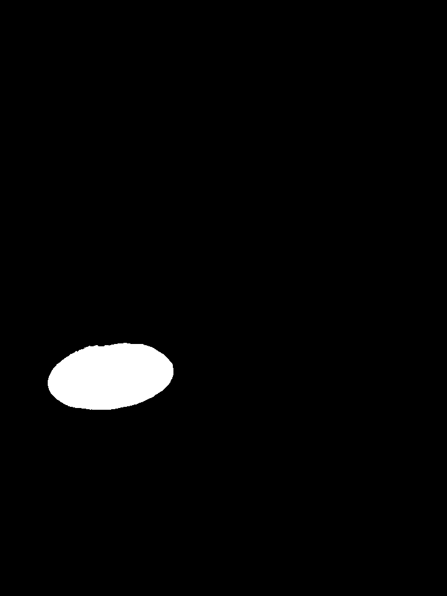
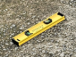
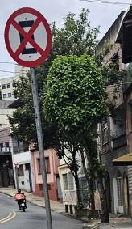
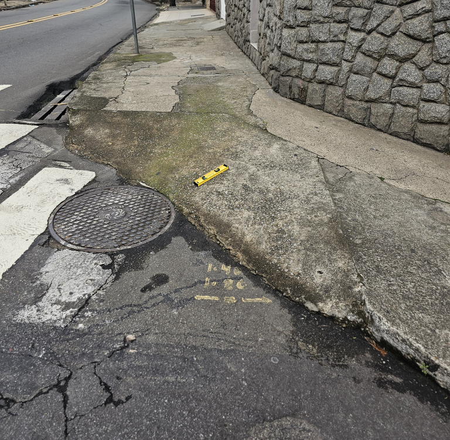
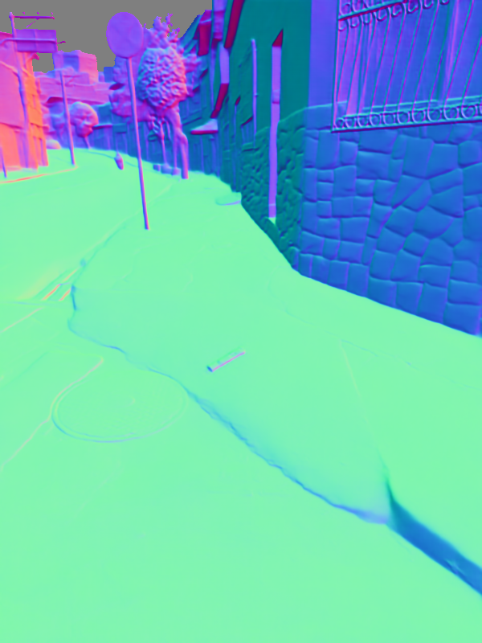

Amostra JF37b¶
Metadados¶
| Propriedade | Valor |
|---|---|
| ID | JF37b |
| Dimensões Originais | 3000 × 4000 |
| Score de Qualidade | 1.00 |
| Formato | jpeg |
Imagem Original¶
{kind=link}
Segmentação¶
{kind=link}
Objetos Detectados¶
| # | Label | Confiança | Score da Máscara | Crop | Máscara |
|---|---|---|---|---|---|
| 0 | pothole | 0.596 | 0.984 |  |
|
| 1 | pole | 0.533 | 0.910 | ||
| 2 | tree | 0.427 | 0.910 | ||
| 3 | parked car | 0.398 | 0.867 | ||
| 4 | parked car | 0.385 | 0.906 | ||
| 5 | obstacle | 0.395 | 0.930 |  |
|
| 6 | tree | 0.333 | 0.883 |  |
|
| 7 | tactile paving | 0.323 | 0.953 |  |
{kind=link}
{kind=link}
{kind=link}
{kind=link}
{kind=link}
{kind=link}
{kind=link}
{kind=link}
{kind=link}
{kind=link}
{kind=link}
{kind=link}
{kind=link}
{kind=link}
{kind=link}
{kind=link}
Profundidade e Normais¶
| Mapa de Profundidade | Mapa de Normais |
|---|---|
 |
{kind=link}
{kind=link}
Medições¶

| Métrica | Valor do Sistema | Confiança |
|---|---|---|
| Largura da Faixa Livre | 1.3209643 m | 0.325 |
| Largura da Calçada | 3.3357294 m | 0.325 |
| Largura Máxima | 5.1200767 m | — |
| Inclinação Longitudinal | 0.95% | 0.401 |
| Inclinação Transversal | 0.03% | 0.401 |
| Escala Válida | ❌ | — |
Aviso de Escala
High depth variance detected. Scale estimation may be inaccurate.
Classificação e Comparação¶
| Pergunta | Pesquisador | Sistema | LLM | Pesq. |
|---|---|---|---|---|
| “Qual a largura da calçada?” | 2,1 | 3.34m | ❌ Incorrect | ❌ Incorrect |
| “Qual a largura da faixa livre?” | 1,16 | 1.32m | ❌ Incorrect | ❌ Incorrect |
| “Qual a inclinação longitudinal da calçada?” | 10,24 | 0.95% | ❌ Incorrect | ❌ Incorrect |
| “Qual a inclinação transversal da calçada?” | 3,5 | 0.03% | ❌ Incorrect | ❌ Incorrect |
| “Classifique a largura da calçada como “Acessível” quando... | 2,1 | Acessível. A largura da calçada é de ... | ✅ Exact Match | ❌ Incorrect |
| Classifique a largura da faixa livre da calçada como "Ac... | 1,16 | Acessível. A largura da faixa livre é... | ❌ Incorrect | ❌ Incorrect |
| Classifique a inclinação longitudinal da calçada como "Ac... | 10,24 | Acessível. A inclinação longitudinal ... | ❌ Incorrect | ❌ Incorrect |
| Classifique a inclinação transversal da calçada como "Ace... | 3,5 | Acessível. A inclinação transversal é... | ❌ Incorrect | ❌ Incorrect |
| 02-Medições Qualitativas | Levantamento | Sistema | Avaliação (LLM) | Avaliação Pesquisador |
| “Classifique a qualidade do revestimento da calçada com u... | 6 | 4. A calçada apresenta desníveis, tri... | ⚠️ Partial Match | ⚠️ Partial Match |
| “Quais os materiais utilizados na superfície da calçada?” | Concreto | Concreto e asfalto. A superfície é co... | ⚠️ Partial Match | ⚠️ Partial Match |
| “Existe trinca na calçada? (Sim/Não)” | Não | Sim. Existem trincas visíveis na supe... | ❌ Incorrect | ❌ Incorrect |
| “Existe buraco na calçada? (Sim/Não)” | Não | Não. Não há buracos evidentes na calç... | ✅ Exact Match | ✅ Exact Match |
| “Existe fissura na calçada? (Sim/Não)” | Sim | Sim. Existem fissuras visíveis, princ... | ✅ Exact Match | ✅ Exact Match |
| 03-Objetos e Obstáculos | Levantamento | Sistema | Avaliação (LLM) | Avaliação Pesquisador |
| “Existe rampa de acesso para carros que interrompe a faix... | Não | Sim. Há uma rampa de acesso para carr... | ❌ Incorrect | ❌ Incorrect |
| “Liste os obstáculos que obstruem a faixa livre da calçad... | Desnível elevado | Desnível acentuado (cunha), tampa de ... | ⚠️ Partial Match | ⚠️ Partial Match |
| “Liste os obstáculos que se encontram na calçada” | Desnível elevado | Desnível acentuado (cunha), tampa de ... | ⚠️ Partial Match | ⚠️ Partial Match |
| 04-Elementos Adicionais | Levantamento | Sistema | Avaliação (LLM) | Avaliação Pesquisador |
| “Existe rampa de rebaixamento do meio fio na calçada? (Si... | Sim | Não. Não há rampa de rebaixamento do ... | ❌ Incorrect | ❌ Incorrect |
| 05-Avaliação Geral | Levantamento | Sistema | Avaliação (LLM) | Avaliação Pesquisador |
| “Seria possível uma pessoa usuária de cadeira de rodas pa... | Não | Não. Os desníveis e a rampa de acesso... | ✅ Exact Match | ✅ Exact Match |
| “Qual é o maior desafio para uma pessoa usuária de cadeir... | A inclinação da rampa de re... | O maior desafio é o desnível acentuad... | ⚠️ Partial Match | ⚠️ Partial Match |
Detalhes da Avaliação¶
“Qual a largura da calçada?”
Justificativa LLM: Difference of 58.8% (relative) exceeds 10.0% tolerance. System: 3.34, Researcher: 2.10
“Qual a largura da faixa livre?”
Justificativa LLM: Difference of 13.9% (relative) exceeds 10.0% tolerance. System: 1.32, Researcher: 1.16
“Qual a inclinação longitudinal da calçada?”
Justificativa LLM: Difference of 90.7% (relative) exceeds 10.0% tolerance. System: 0.95, Researcher: 10.24
“Qual a inclinação transversal da calçada?”
Justificativa LLM: Difference of 99.1% (relative) exceeds 10.0% tolerance. System: 0.03, Researcher: 3.50
“Classifique a largura da calçada como “Acessível” quando apropriada para uma...
Justificativa LLM: O sistema classificou corretamente como 'Acessível' pois a largura da calçada (3,34 m) está acima do mínimo exigido (2,0 m) pela NBR9050:2020. O valor do pesquisador (2,1) também está acima do mínimo, então a classificação é compatível.
Classifique a largura da faixa livre da calçada como "Acessível" quando apro...
Justificativa LLM: O sistema classificou como 'Acessível' com base em 1,32 m, mas o pesquisador informou 1,16 m, que está abaixo do mínimo de 1,2 m. Portanto, a resposta correta seria 'Não Acessível'.
Classifique a inclinação longitudinal da calçada como "Acessível" quando apro...
Justificativa LLM: O sistema classificou como 'Acessível' com base em 0,95%, mas o pesquisador informou 10,24%, que está acima do máximo permitido (8,33%). Portanto, a resposta correta seria 'Não Acessível'.
Classifique a inclinação transversal da calçada como "Acessível" quando aprop...
Justificativa LLM: O sistema classificou como 'Acessível' com base em 0,03%, mas o pesquisador informou 3,5%, que está acima do máximo permitido (3%). Portanto, a resposta correta seria 'Não Acessível'.
02-Medições Qualitativas
Justificativa LLM: Justificativa (LLM)
Observações do Pesquisador: Observações
“Classifique a qualidade do revestimento da calçada com uma pontuação entre 1...
Justificativa LLM: O sistema deu nota 4 e o pesquisador 6. Ambos indicam qualidade ruim, mas há uma diferença de 2 pontos. Considerando a subjetividade da avaliação, é um 'PARTIAL_MATCH'.
“Quais os materiais utilizados na superfície da calçada?”
Justificativa LLM: O sistema identificou concreto e asfalto, enquanto o pesquisador indicou apenas concreto. Como calçadas podem ter mais de um material, mas o pesquisador não confirmou o asfalto, é 'PARTIAL_MATCH'.
“Existe trinca na calçada? (Sim/Não)”
Justificativa LLM: O sistema respondeu 'Sim', mas o pesquisador respondeu 'Não'. Portanto, está incorreto.
“Existe buraco na calçada? (Sim/Não)”
Justificativa LLM: Ambos responderam 'Não'.
“Existe fissura na calçada? (Sim/Não)”
Justificativa LLM: Ambos responderam 'Sim'.
03-Objetos e Obstáculos
Justificativa LLM: Justificativa (LLM)
Observações do Pesquisador: Observações
“Existe rampa de acesso para carros que interrompe a faixa livre? (Sim ou Não)”
Justificativa LLM: O sistema respondeu 'Sim', mas o pesquisador respondeu 'Não'.
“Liste os obstáculos que obstruem a faixa livre da calçada objetivamente”
Justificativa LLM: O sistema listou desnível acentuado (cunha), tampa de bueiro e trincas. O pesquisador listou apenas desnível elevado. O principal obstáculo foi identificado, mas o sistema incluiu elementos a mais.
“Liste os obstáculos que se encontram na calçada”
Justificativa LLM: O sistema listou desnível acentuado (cunha), tampa de bueiro, trincas e fissuras. O pesquisador listou apenas desnível elevado. O principal obstáculo foi identificado, mas o sistema incluiu elementos a mais.
04-Elementos Adicionais
Justificativa LLM: Justificativa (LLM)
Observações do Pesquisador: Observações
“Existe rampa de rebaixamento do meio fio na calçada? (Sim/Não)”
Justificativa LLM: O sistema respondeu 'Não', mas o pesquisador respondeu 'Sim'.
05-Avaliação Geral
Justificativa LLM: Justificativa (LLM)
Observações do Pesquisador: Observações
“Seria possível uma pessoa usuária de cadeira de rodas passar pela calçada?”
Justificativa LLM: Ambos responderam 'Não'.
“Qual é o maior desafio para uma pessoa usuária de cadeira de rodas para pass...
Justificativa LLM: O sistema destacou o desnível acentuado (cunha) como maior desafio, enquanto o pesquisador mencionou a inclinação da rampa de rebaixamento e falta de espaço na faixa livre. Ambos apontam obstáculos relacionados à inclinação/desnível, mas o pesquisador foi mais detalhado.